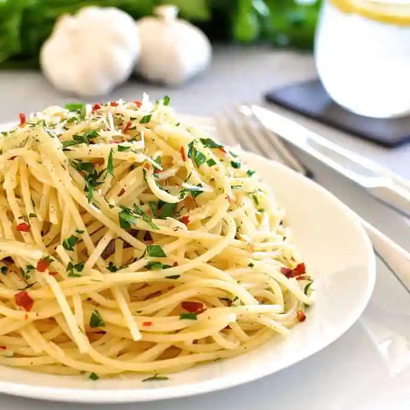

Pasta Recipe

Description
These pasta recipes are simple Italian classics you'll find in trattorias all across Italy. “Pantry” meals that take less than 15 minutes to make, each makes enough for 6 people.
Ingredients
- 500 g dried spaghetti
- 1/2 cup extra virgin olive oil
- 10 garlic cloves
- 1 tbsp red chilli flakes
- 1/4 cup chopped parsley
Steps
- Cook 1lb/500g of dried spaghetti (or any other long dried pasta) in a large pot of salted boiling water per packet MINUS 1 minute.
- Heat oil over medium high heat. Add garlic and cook until golden - be careful not to burn it.
- Toss with pasta and cooking water per Base Directions. Toss through parsley and chilli flakes, serve with parmesan.
- When pasta is ready, scoop out 1 cup of pasta cooking water, and drain pasta.
- Add pasta into chosen sauce with 3/4 cup pasta cooking water. Toss pasta until sauce thickens and sticks to pasta (called "emulsifying" the sauce), 1 - 2 minutes. Use more pasta water if needed to loosen sauce.
- Season with salt and pepper to taste. Finish pasta per chosen recipe.